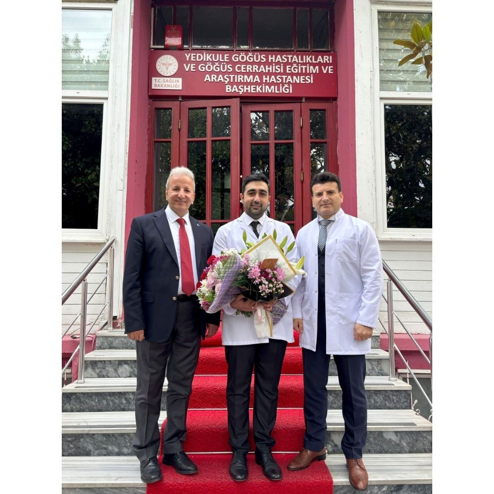
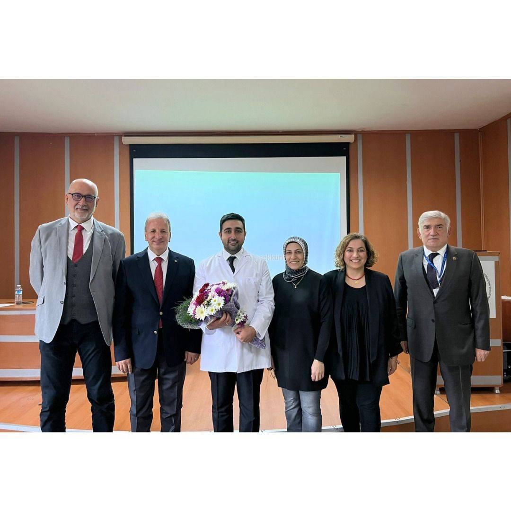
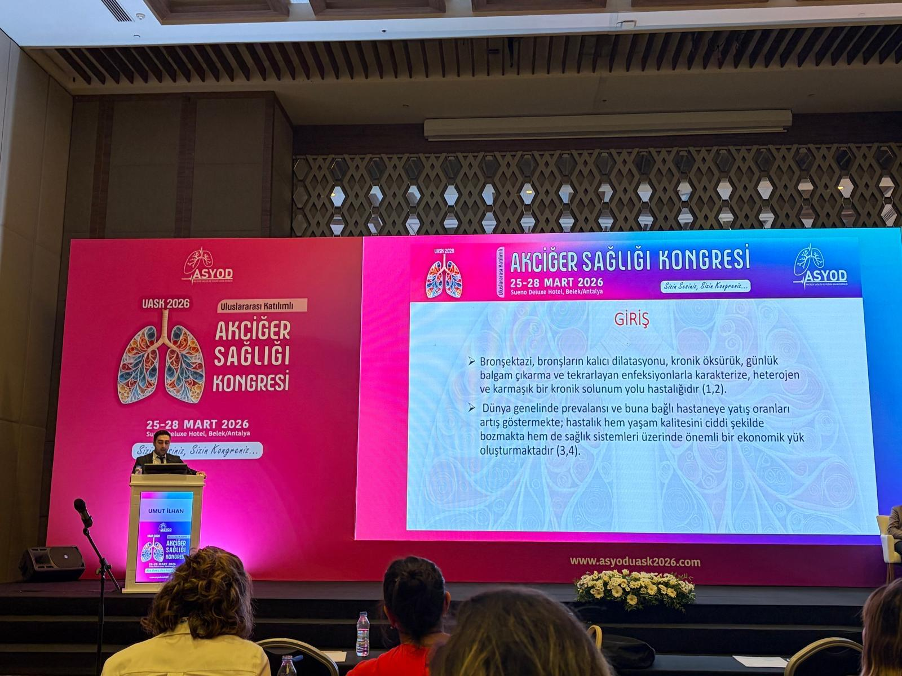
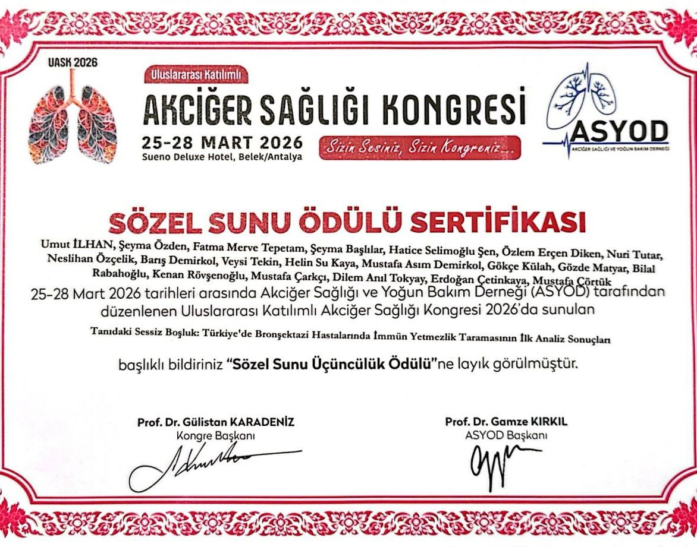

Dr. Umut İlhan provides advanced diagnostic and treatment services for interstitial lung diseases and complex pulmonary conditions at Yedikule Training and Research Hospital.
Dr. Umut İlhan is a specialist in pulmonology (chest diseases) at Yedikule Chest Diseases and Thoracic Surgery Education and Research Hospital in Istanbul — one of Turkey's premier referral centers for lung diseases, affiliated with the University of Health Sciences Turkey (Sağlık Bilimleri Üniversitesi).
His clinical and research focus centers on interstitial lung diseases (ILD), with particular expertise in advanced interventional bronchoscopy techniques including cryo-transbronchial biopsy (cryo-TBB) and bronchoalveolar lavage (BAL).
As an active researcher, Dr. İlhan has contributed as corresponding author and co-author to multiple peer-reviewed publications in leading international journals including BMC Pulmonary Medicine, Allergologia et Immunopathologia, Cureus, and Sarcoidosis, Vasculitis and Diffuse Lung Diseases.
Specialized care in advanced pulmonary conditions with a focus on precision diagnostics and evidence-based treatment.
Peer-reviewed research in leading international pulmonology journals.
İlhan U, Demirkol B, Çörtük M, Cetinkaya E, et al. — BMC Pulmonary Medicine 26(1):25 (2025)
View on PubMed Centralİlhan U, et al. — Allergologia et Immunopathologia 54(2):117–124 (2026)
İlhan U, et al. — Cureus 18(1):e101764 (2026)
İlhan U, et al. — Sarcoidosis, Vasculitis and Diffuse Lung Diseases 42(1):15942 (2025)
View Articleİlhan U, et al. — Sarcoidosis, Vasculitis and Diffuse Lung Diseases 40(4):e2023049 (2023)
View Articleİlhan U, et al. — Turkish Journal of Medical Sciences 52(5):1478–1485 (2022)
View on PubMed CentralClinical success and academic recognition in the media.
The medical team led by Dr. Umut İlhan performed a life-saving procedure on an elderly patient, receiving widespread local media coverage and recognition for exceptional clinical practice.

Dr. İlhan receiving recognition for his outstanding clinical achievements and contributions to pulmonology at Yedikule Hospital.

Dr. İlhan presenting on immune deficiency screening in bronchiectasis patients at the ASYOD International Lung Health Congress, March 25–28, 2026.

Dr. İlhan and co-authors received the 3rd Place Oral Presentation Award for their study on immune deficiency screening in Turkish bronchiectasis patients.
Appointments for Dr. Umut İlhan are available through Turkey's national MHRS (Merkezi Hekim Randevu Sistemi) appointment system.
Schedule via MHRS